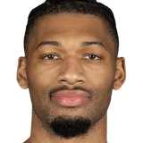

Played 1 season for 1 team; his teams went 6–13 in his games.
Jump to: Record by opponent · Season by season · Teammate help
Compare Javonte Cooke with…
Final NBA finish, season by season
Title Finals Other playoffs Missed playoffs. #1 = champion; the dashed line is last place that season. Each point opens that season's final standings.
All 30 teams ranked in 2025-26, his best finish (#16)Teammate help
 Deni Avdija1.01 season
Deni Avdija1.01 season
Career
Career records (W–L, W − L, with and without) include 2026-27 games through Nov. 23, 2026; season counts and finishes are through 2025-26. Each card opens its board in the same scope. How we count.

Latest completed seasons
- 2025-26·
 Portland·#16 of 3042–40 · Lost in the first round 1–4 to
Portland·#16 of 3042–40 · Lost in the first round 1–4 to  San Antonio
San Antonio
Season by season
Newest first; every header sorts. Final NBA finish is the team's rank among all teams that season (#1 = champion) and opens that season's standings. "Without him" uses the team-season window; the span line counts only the games between his first and last game for the team.
On/off, starts and close games
From the lineup data, 1996-97 on. On/off is net points per 100 possessions with him on the floor minus off, a different unit from the win-rate gaps. Started and off the bench are team records in those games; close games are those within 5 points in the last 5 minutes with him on the floor.
| 2025-26 | −19.2 | 6–13 31.6% |
Teammate help by season
Help this season = Teammates Score points for honors won that season by teammates who shared a game with him, with every teammate that adds to it. Only honors won in that same season count. How help works.
- 2025-26Portland
Deni Avdija All-Star110 g
Help this season: 1 = 1 Deni Avdija
Other teammates (no honors that season): Toumani Camara 19 g, Sidy Cissoko 18 g, Jerami Grant 17 g, Donovan Clingan 17 g, Yang Hansen 16 g, Rayan Rupert 15 g, Caleb Love 14 g, Jrue Holiday 12 g, Robert Williams 10 g, Shaedon Sharpe 9 g, Duop Reath 8 g, Kris Murray 8 g, Blake Wesley 8 g, Vit Krejci 7 g and 2 more
Record against each opponent
Regular season, through 2025-26 (2026-27 games not included): 19 games, 6–13, against 17 franchises.
Grouped by franchise (named as today); game lists keep each team's name that season. Filters and the tab are kept in the URL, so a filtered view can be shared.
| Games list | |||||||
|---|---|---|---|---|---|---|---|
| 2 | 1–1 | 50.0% | 0 | N/A | 2025-26 | ||
| 2 | 1–1 | 50.0% | 0 | N/A | 2025-26 | ||
| 1 | 0–1 | 0.0% | −1 | N/A | 2025-26 | ||
| 1 | 0–1 | 0.0% | −1 | N/A | 2025-26 | ||
| 1 | 0–1 | 0.0% | −1 | N/A | 2025-26 | ||
| 1 | 0–1 | 0.0% | −1 | N/A | 2025-26 | ||
| 1 | 0–1 | 0.0% | −1 | N/A | 2025-26 | ||
| 1 | 0–1 | 0.0% | −1 | N/A | 2025-26 | ||
| 1 | 1–0 | 100.0% | +1 | N/A | 2025-26 | ||
| 1 | 0–1 | 0.0% | −1 | N/A | 2025-26 | ||
| 1 | 0–1 | 0.0% | −1 | N/A | 2025-26 | ||
| 1 | 0–1 | 0.0% | −1 | N/A | 2025-26 | ||
| 1 | 0–1 | 0.0% | −1 | N/A | 2025-26 | ||
| 1 | 1–0 | 100.0% | +1 | N/A | 2025-26 | ||
| 1 | 1–0 | 100.0% | +1 | N/A | 2025-26 | ||
| 1 | 0–1 | 0.0% | −1 | N/A | 2025-26 | ||
| 1 | 1–0 | 100.0% | +1 | N/A | 2025-26 |
Rows add up to his career record in his games. A playoff series counts when he played in it; early round-robin games show as games only. How we count.
Arrival and departure
Team wins per 82 games the season before he arrived vs his first season there, and his last season vs the season after he left. He leaves a team only when his next season with games is for another team (or he never plays again); whole seasons he missed and came back from are one "Missed" row with the team's record without him. Per 82 so short seasons compare fairly. These are team records, not a measure of what he did.
| Debut | 2025-26 | 2024-25: 36–46 36.0 per 82 | 2025-26: 42–40 42.0 per 82 | +6.0 wins |
With and without his teammates
His 12 teammates with the most regular-season games together. "Together" is the team's record in the games both played for it; "Without him" is the team's record in the games Javonte Cooke played for that team while the teammate was on it (between the teammate's first and last game for the team, the appearance span) and the teammate did not play. Fewer than 20 games without him: no gap. Games through Nov. 23, 2026. How we count.
- Toumani CamaraPortland 2025-26
- Together
- 6–13 31.6%
- Without him
- N/A N/A
- Gap
- Too few games without him
- Sidy CissokoPortland 2025-26
- Together
- 6–12 33.3%
- Without him
- 0–1 0.0%
- Gap
- Too few games without him
 Donovan ClinganPortland 2025-26
Donovan ClinganPortland 2025-26- Together
- 6–11 35.3%
- Without him
- 0–2 0.0%
- Gap
- Too few games without him
 Jerami GrantPortland 2025-26
Jerami GrantPortland 2025-26- Together
- 5–12 29.4%
- Without him
- 1–1 50.0%
- Gap
- Too few games without him
 Yang HansenPortland 2025-26
Yang HansenPortland 2025-26- Together
- 5–11 31.2%
- Without him
- 1–2 33.3%
- Gap
- Too few games without him
 Rayan RupertPortland 2025-26
Rayan RupertPortland 2025-26- Together
- 6–9 40.0%
- Without him
- 0–1 0.0%
- Gap
- Too few games without him
- Caleb LovePortland 2025-26
- Together
- 5–9 35.7%
- Without him
- 1–4 20.0%
- Gap
- Too few games without him
 Jrue HolidayPortland 2025-26
Jrue HolidayPortland 2025-26- Together
- 4–8 33.3%
- Without him
- 2–5 28.6%
- Gap
- Too few games without him
 Robert WilliamsPortland 2025-26
Robert WilliamsPortland 2025-26- Together
- 3–7 30.0%
- Without him
- 3–6 33.3%
- Gap
- Too few games without him
- Deni AvdijaPortland 2025-26
- Together
- 3–7 30.0%
- Without him
- 3–6 33.3%
- Gap
- Too few games without him

Shaedon SharpePortland 2025-26- Together
- 2–7 22.2%
- Without him
- 4–6 40.0%
- Gap
- Too few games without him
 Blake WesleyPortland 2025-26
Blake WesleyPortland 2025-26- Together
- 3–5 37.5%
- Without him
- 3–8 27.3%
- Gap
- Too few games without him